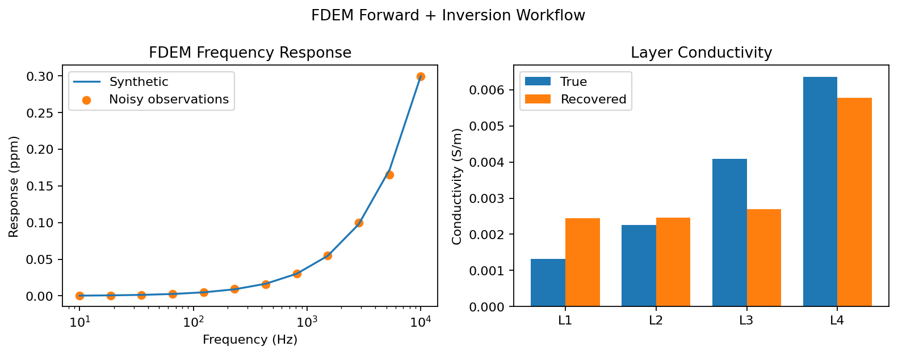

Note
Go to the end to download the full example code.
FDEM Forward + Inversion Workflow#
This example demonstrates a complete 1D FDEM workflow: 1. Build synthetic FDEM data from hydrological properties. 2. Invert the synthetic data with FDEMInversion.
import matplotlib.pyplot as plt
import numpy as np
from PyHydroGeophysX.forward.fdem_forward import FDEMForwardModeling
from PyHydroGeophysX.inversion.fdem_inversion import FDEMInversion
Define the Layered Hydrological Model#
water_content = np.array([0.12, 0.16, 0.22, 0.28])
porosity = np.array([0.30, 0.32, 0.35, 0.38])
thicknesses = np.array([5.0, 10.0, 15.0])
frequencies = np.logspace(1, 4, 12)
source_location = np.array([0.0, 0.0, 0.0])
receiver_location = np.array([12.0, 0.0, 0.0])
Generate Synthetic FDEM Data#
The hydrological properties are converted to electrical conductivity before the layered-earth FDEM response and deterministic synthetic noise are added.
noisy, clean, uncertainty, conductivity = FDEMForwardModeling.hydro_to_fdem(
water_content=water_content,
porosity=porosity,
layer_thicknesses=thicknesses,
frequencies=frequencies,
source_location=source_location,
receiver_location=receiver_location,
receiver_component="secondary",
waveform_type="dipole",
noise_level=0.03,
seed=42,
sigma_w=0.05,
m=1.5,
n=2.0,
sigma_s=0.0,
)
Invert the Synthetic Response#
inversion = FDEMInversion(
frequencies=frequencies,
dobs=noisy,
uncertainties=uncertainty,
thicknesses=thicknesses,
source_location=source_location,
receiver_location=receiver_location,
receiver_component="secondary",
waveform_type="dipole",
max_iterations=40,
use_irls=True,
)
result = inversion.run()
print("FDEM workflow complete")
print(f" true conductivity: {conductivity}")
print(f" recovered conductivity: {result.recovered_conductivity}")
print(f" chi2: {result.chi2:.3f}")
Visualize Data Fit and Recovered Conductivity#
response_scale = 1e6
layer_labels = [f"L{i + 1}" for i in range(conductivity.size)]
layer_positions = np.arange(conductivity.size)
fig, axes = plt.subplots(1, 2, figsize=(10, 4))
axes[0].plot(
frequencies,
np.abs(clean) * response_scale,
color="tab:blue",
label="Synthetic",
)
axes[0].scatter(
frequencies,
np.abs(noisy) * response_scale,
color="tab:orange",
label="Noisy observations",
)
axes[0].set_xscale("log")
axes[0].set_xlabel("Frequency (Hz)")
axes[0].set_ylabel("Response (ppm)")
axes[0].set_title("FDEM Frequency Response")
axes[0].legend(loc="best")
bar_width = 0.38
axes[1].bar(
layer_positions - bar_width / 2,
conductivity,
width=bar_width,
label="True",
)
axes[1].bar(
layer_positions + bar_width / 2,
result.recovered_conductivity,
width=bar_width,
label="Recovered",
)
axes[1].set_xticks(layer_positions, layer_labels)
axes[1].set_ylabel("Conductivity (S/m)")
axes[1].set_title("Layer Conductivity")
axes[1].legend(loc="best")
fig.suptitle("FDEM Forward + Inversion Workflow")
fig.tight_layout()
plt.show()
The frequency response verifies the synthetic data fit, while the layer plot compares the petrophysical conductivity with the inverted model.
{kind=link}
